01 · The Film
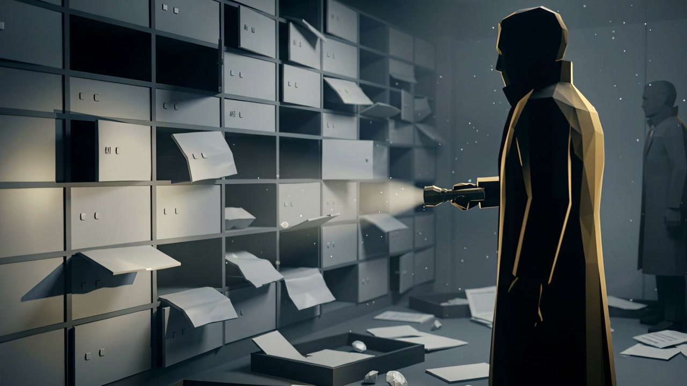
▶ Watch on YouTube · 16:56 · 4KFrom the film: February 2003 — a crew from the legendary ‘School of Turin’, led by Leonardo Notarbartolo, empties a vault sealed behind ten layers of security and walks out with over $100 million in diamonds. Not a single alarm sounds. The ‘heist of the century’ wasn’t cracked by force — but by patience, a decoy, and one careless mistake.
The Short — 9:16 Cut
A 60-second cut for the vertical feed.
The hook of the whole story — ten layers of security, one impossible vault — distilled into a scroll-stopping vertical short, cut and captioned for Shorts, Reels and TikTok.
Open on YouTube →The Testimonial — In His Own Words
“As you could see, I am simple and spontaneous — if something comes to me and I like it, I do it. That's how it was with Eray.”
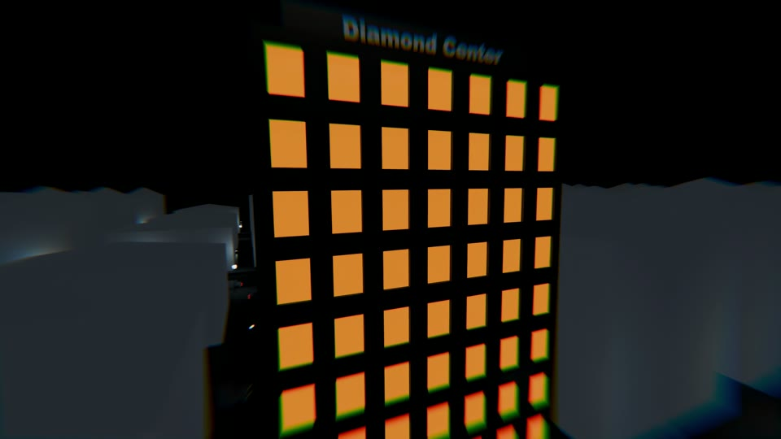
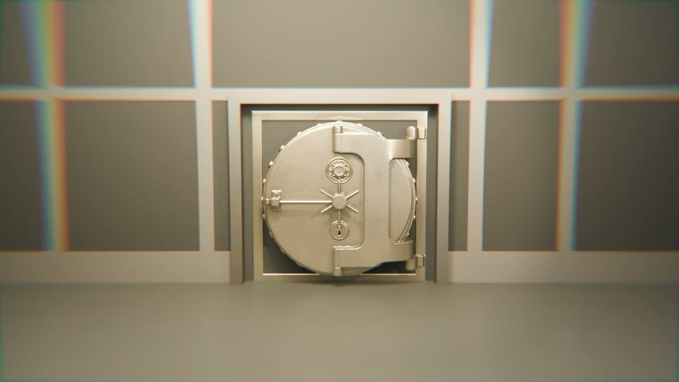
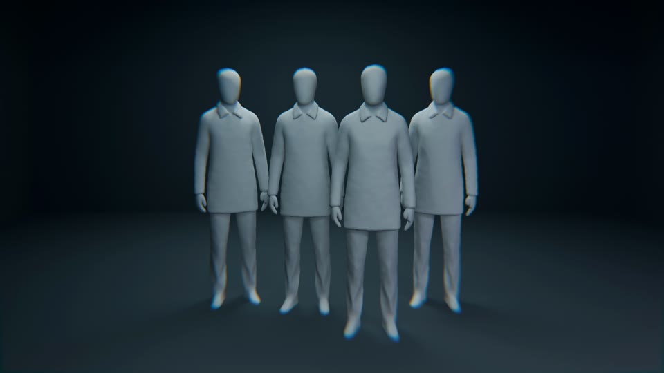
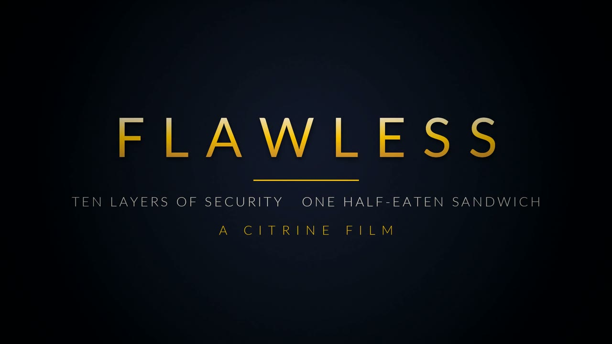
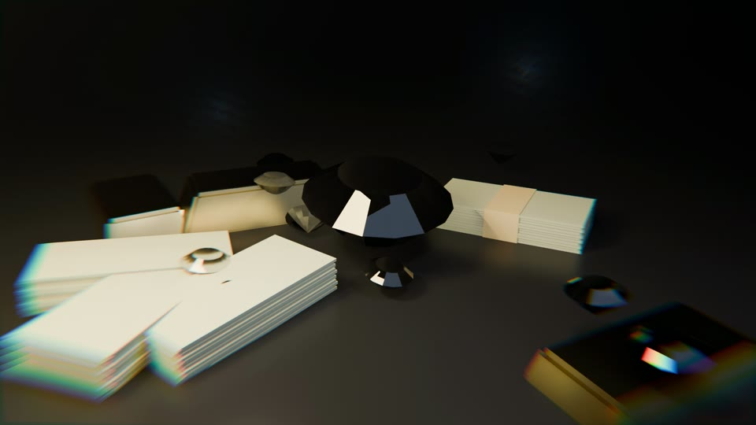
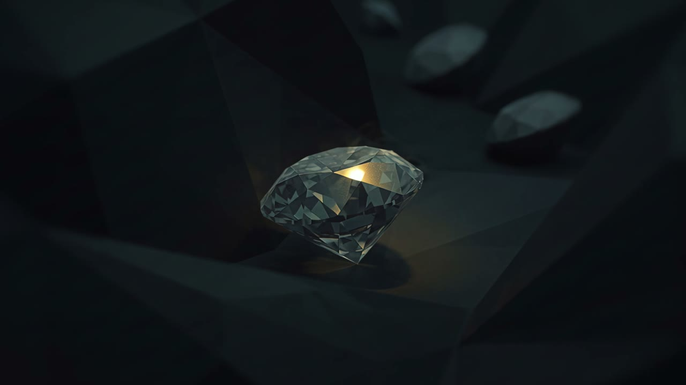
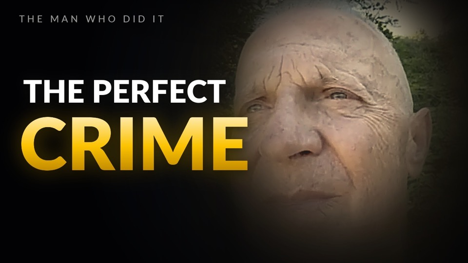
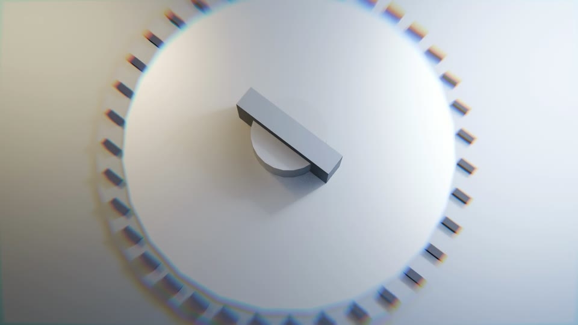
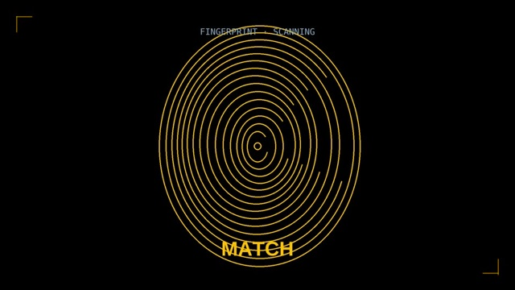
02 · The Story
February 2003. Over $100 million vanishes from a vault the world called impossible to breach — without a single alarm.
FLAWLESS is the debut episode of CITRINE, an original true-crime documentary channel I created, wrote, directed, edited and narrated. The challenge: launch a brand-new channel with a first episode that could stand next to established true-crime studios — while securing something no documentary on this story had before: the voice of the actual thief.
03 · The Interview — The Mastermind
The heart of the film is an exclusive conversation with the man who led the heist. Rather than narrate about him, the documentary lets Notarbartolo speak for himself — the planning, the moment the vault opened, the single mistake, and how he sees it today — turning a reconstruction into first-person history.
04 · Production Design — The 3D Build
Every location was modeled from scratch — the Diamond Center facade, the vault, the sensors, the crew — in the film's minimalist Amber-Noir language: white maquette surfaces, amber light, forensic labels.
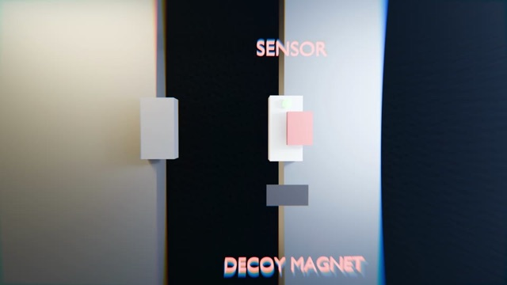
The Decoy Magnet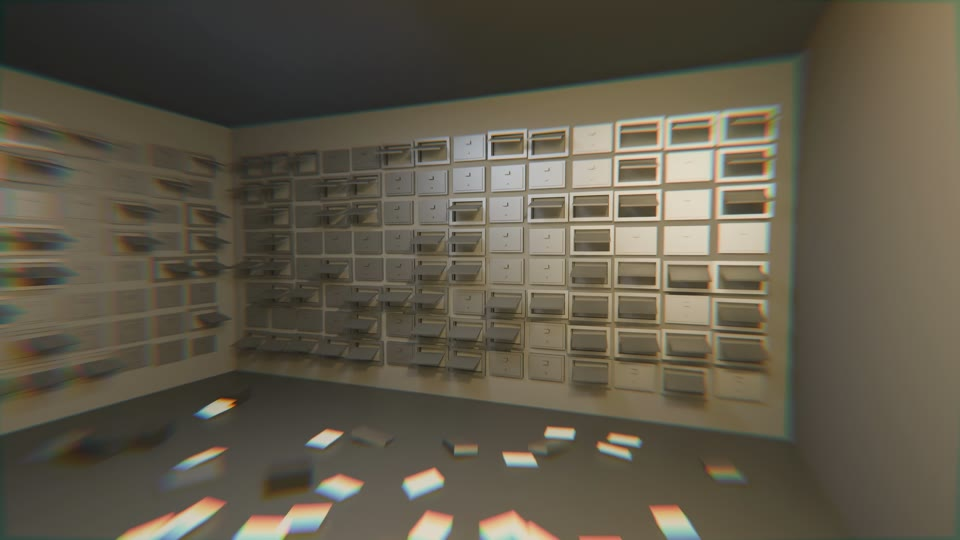
The Aftermath05 · Motion & Identity — 35 Custom Graphics
The film's entire graphic language was designed from zero: an original title sequence, five act titles, security counters, forensic overlays, date stamps and the DNA reveal — all 4K, all in CITRINE gold.
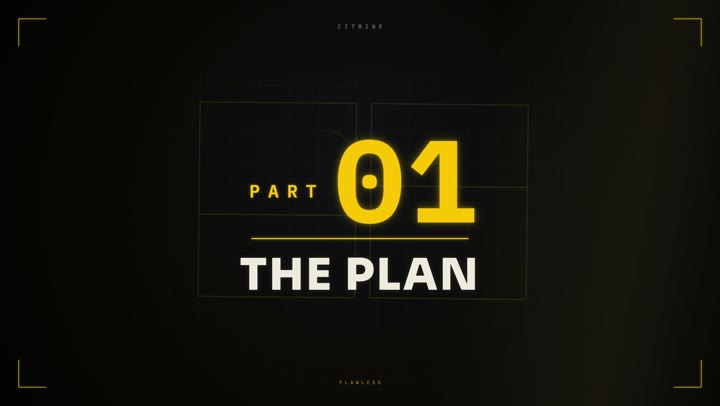
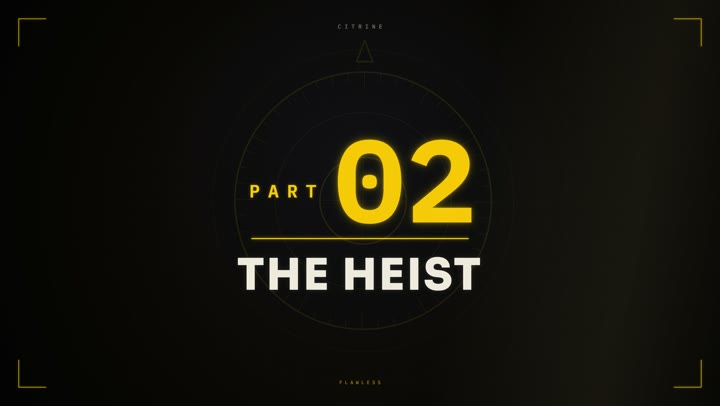
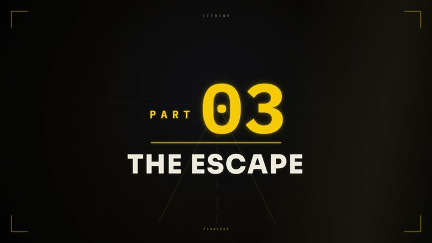
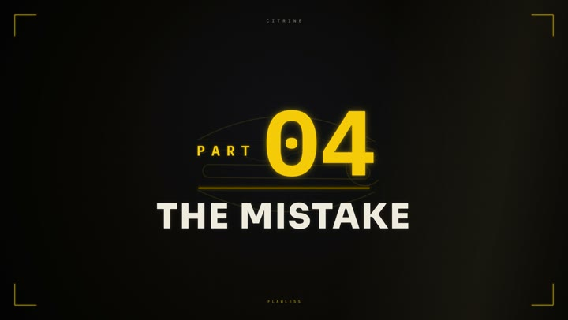
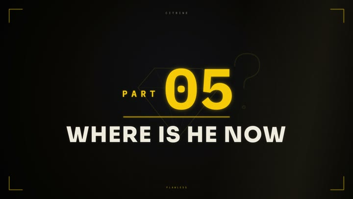
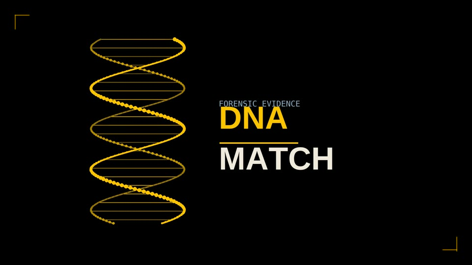
DNA Match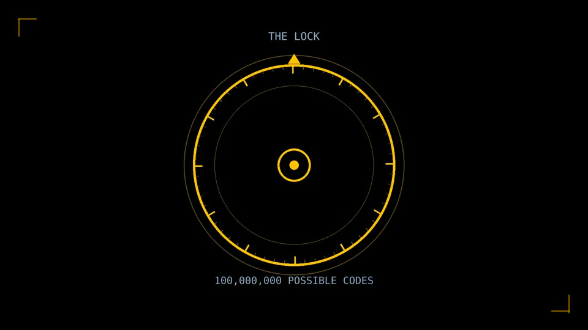
The Lock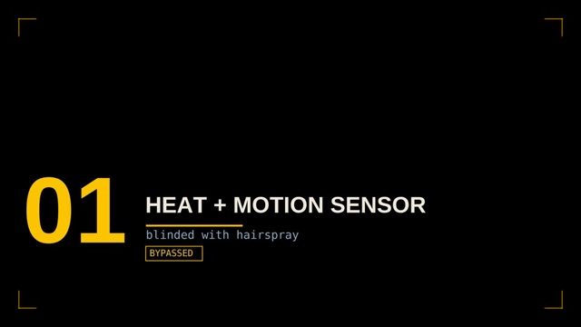
Security Counter06 · The Thumbnail Lab
Launch was treated like a product: thumbnail directions designed and A/B-tested with matched titles, chapters and multi-language metadata. The two that carried it:
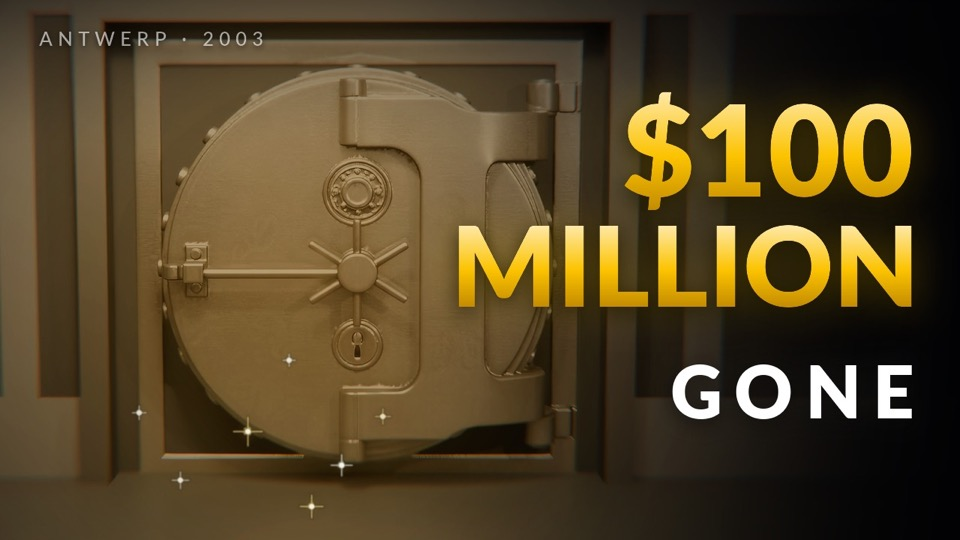
$100M Gone07 · Localization — One Film, Six Languages
FLAWLESS ships in two full audio versions — the original English narration and a complete Italian dub in my own cloned voice (fitting, since the story is Italian and Notarbartolo's interview is already in Italian). Turkish subtitles are live, with German, Spanish and French subtitles planned — one upload, growing reach.
08 · How It Was Made
- Story & script. A retention-first narrative — cold open + five acts + outro — engineered around the central irony: a perfect crime undone by an ordinary human mistake.
- Original interview. Conducted and integrated an exclusive interview with Leonardo Notarbartolo (in Italian, fully subtitled) as the emotional spine of the film.
- Reconstruction. 30+ bespoke 3D scenes rebuilding the vault, the sensors and the escape — art-directed in a signature "Amber-Noir" look.
- Motion & identity. 35 custom motion graphics (security counters, forensic overlays, date stamps, the DNA reveal) plus an original title sequence, opener and outro.
- Sound & grade. Professional narration, full sound design and music, mixed to broadcast loudness (−14 LUFS), finished with a cinematic color grade.
- Launch strategy. A/B-tested titles and thumbnails, a chaptered timeline, multi-language audio and a coordinated social rollout.
09 · Behind the Edit
The part no automation can fake. Behind every second of FLAWLESS is a hand-built edit — the invisible work that turns raw 3D renders, narration and sound into a film.
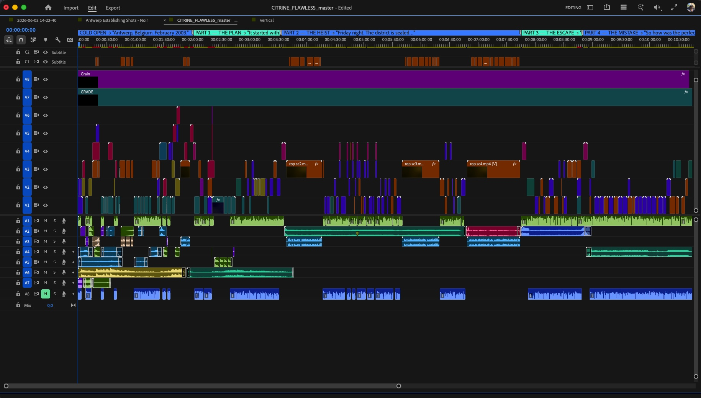
Craft & Scale
Tools & Stack
What This Project Demonstrates
Credits
Have a story worth telling?
Documentaries, brand films and cinematic AI — written, directed and finished end to end. Let's build the next one.